7-11便利店

鸡与数学
现实生活中的趣味问题
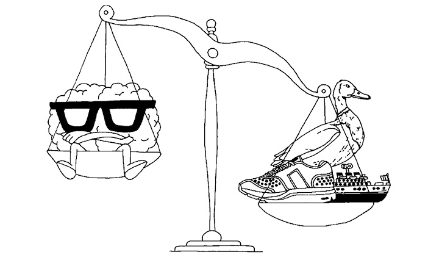
本章将讨论我们在现实生活中遭遇的难题，有的问题与锅碗瓢盆、引信、汽车、土豆等常见物品有关，有的问题则与日常生活中的某些情境有关，例如赛跑、乘飞机旅行等。下面这个购物问题在本书介绍的所有趣味问题中属于历史最久远的。
100只鸡
公鸡的价格是5枚硬币，母鸡的价格是4枚硬币，小鸡的价格是1/4枚硬币。买100只鸡，一共用去了100枚硬币，请问公鸡、母鸡和小鸡分别有多少只？
这个问题是中国数学家甄鸾在6世纪中叶提出来的，但同一类型的问题（即用100个单位的货币购买3种动物且动物总数正好是100）出现的最早时间还要向前推一个世纪，地点也是在中国。
这个问题设计得非常高明，表述简明扼要，答案却不那么一目了然。如果硬猜答案，很快就会令人头晕目眩。深受中国人喜爱的“100只动物”问题后来传到了印度、中东和欧洲。阿尔昆在《青少年趣味智力问题》中列出了三个版本：公猪、母猪和小猪，价格分别为10个第纳里厄斯、5个第纳里厄斯和1/2个第纳里厄斯；马、牛和羊，价格分别为3个苏勒德斯、1个苏勒德斯和1/24个苏勒德斯；骆驼、驴和羊，价格分别是5个苏勒德斯、1个苏勒德斯和1/20个苏勒德斯。[1]他把第三个版本称作“东方商人问题”，或许是向问题发源地——世界的东方致敬吧。
当今的读者在遇到这类问题时，第一反应是列方程。设买了x只公鸡、y只母鸡和z只小鸡，于是甄鸾的问题就变成了下面这种形式：
（1）x + y + z = 100（一共100只鸡）
（2）5x + 4y + z / 4 = 100（一共100枚硬币）
只要解方程组，就能得出答案。
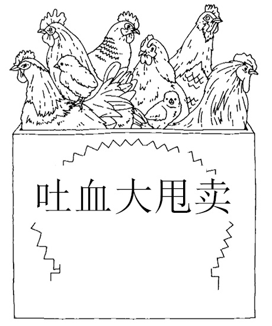
但是，甄鸾、阿尔昆和他们那个时代的人是利用试错法找出答案的。他们没有借助代数，因为那时候代数还没有出现呢。
利用方程求解这道题要简单得多，也可以带给我们更多乐趣。事实上，我之所以喜爱“100只动物”问题，就是因为它们与其他几类问题一起，很早就展示了代数方法的强大功能。“100只动物”问题不仅突出地展示了这些新的数学方法的解题效率，问题本身也极具趣味性，因此，中世纪以及文艺复兴时期的数学家对这类问题进行了不断深入的研究。
代数是数学的一个分支，它的特点是利用x、y、z等符号表示方程中的数及数量。代数这个名称来自阿拉伯语中的“al-jabr”，意思是还原。9世纪，巴格达学者花拉子密（Al-Khwarizmi）用这个词表示数学的一种操作，即在方程一边去掉某项内容，然后在方程另一边“还原”这项内容。花拉子密借助这种方法及其他方法，研究出了简单方程的解法。随后，出生于9世纪的埃及数学家阿布·卡米勒（Abu Kamil）等人纷纷撰文，详细阐述了花拉子密的这些想法。在其中一篇讨论用100个单位的货币购买100只家禽的文章中，卡米勒说：“据我所知，有一种问题受到所有人的喜爱，无论出身高贵还是贫贱，无论学富五车还是不学无术，都会因为它的题型新颖、趣味横生而深受吸引。但是，人们在讨论这些问题时，却因为应用的原理不够明晰，方法不够系统，而无法给出准确的答案，或者仅仅是提出了各种猜测……所以，我决定写一本书，帮助大家更好地理解这类问题。”
接下来，我们来解决前面提出的问题。我们列出了两个方程：
（1）x + y + z = 100
（2）5x + 4y + z / 4 = 100
通常要解此类方程（课本称之为联立方程），方程的个数不能少于未知数的个数。也就是说，如果有3个未知数，我们就需要3个方程。
而现在我们只有两个方程。不过，题目中还给出了一些其他信息，足可保证本题有解。我们可以断定，出售的家禽数不能是1/2只、1/4只，也不可能是负数。（我们还可以断定，每种家禽都要至少买一只。）也就是说，x、y和z的值都必须是正整数，而且都小于100。
现在，让我们来解方程吧。首先，我们把方程（2）乘以4，去掉分母：
（3）20x + 16y + z = 400
利用“还原”法，把方程（3）变形为：
z = 400 –20x – 16y
代入方程（1），得到：
（4）x + y + 400 – 20x – 16y = 100
整理后为：
19x + 15y = 300
至此，我们得到了一个二元方程。由于有其他限制条件，所以可求得该方程的解。通过简单的试错，就会发现符合条件的正整数值只有一组，即x = 15，y = 1。（运用试错法时，请注意300可以被5整除这个特点。由此可知，19x + 15y可以被5整除。由于15y可以被5整除，所以19x肯定也可以被5整除，从而说明x是5的倍数。因此，x的值只有三种可能，即x = 5、10或15，但是前两个值代入后，方程无解。）因此，z = 100 – x – y = 100 – 16 = 84。
正确答案是：15只公鸡、1只母鸡和84只小鸡。
卡米勒在文中指出，这类问题的解分为唯一解、无解和多个解三种情况，具体情况取决于三种家禽的价格。下面这个问题是他举的另一个例子。
百禽问题
用2枚德拉克马银币可以买1只鸭子，用1枚德拉克马银币可以买2只鸽子或者3只母鸡。如果用100枚德拉克马银币买鸭子、鸽子和母鸡，一共买了100只，则鸭子、鸽子和母鸡分别买了多少只？请给出6种答案。
中世纪的阿拉伯学者除了设计新的数学问题以外，还从印度引入了由包括0在内的10个数字组成的数字系统。大约在13世纪，阿拉伯数字（1、2、3、4、5、6、7、8、9和0）传到了欧洲。比萨的列奥纳多（Leonardo of Pisa）[2]是最早使用阿拉伯数字的欧洲人之一，他的《计算之书》（Liber Abaci）不仅介绍了计算与测量方面的内容，还介绍了一些算术难题。例如，下面这道只有唯一答案的鸟类问题：用30第纳里厄斯银币买了30只鸟，其中鹧鸪的价格是每只3枚银币，鸽子每只2枚银币，麻雀每只1/2枚银币。（我把这道题留给大家自行解决。）
在随后的300年里，几乎所有的文艺复兴时期的一流数学家都提出过鸟类问题，内容主要与画眉鸟、云雀、乌鸦、捕蝇鸟、阉鸡、椋鸟、鹅等飞鸟及家禽的降价销售有关。这些问题不仅具有娱乐价值，也为欧洲南部文化史增添了鸟类学（以及烹饪）方面的内容。
只要学会一道鸟类问题的解法，你就能触类旁通，再遇到其他同类问题时，你都会胸有成竹：把问题变成联立方程的形式，然后求整数解。
还有很多其他类型的问题也需要列出联立方程。通常，方程的个数比未知数少，所以必须巧妙地借助试错法，或者敏锐的数学头脑，才可以找出答案。下面这道题是我的最爱，不仅因为它的已知信息似乎严重不足（包含4个未知数，却只有两个方程），而且题中使用的数字正好是一个品牌名称。
7-11便利店
一名顾客走进一家7-11便利店，买了4件商品。
收银员说：“一共7.11英镑。”
顾客说：“这也太巧了！”
收银员说：“是的。我把这4件商品的价格相乘，就算出了它们的总价。”
“不应该是相加吗？”
“相加的话，我也没意见，因为结果是一样的。”
这4件商品的价格分别是多少？
要解决这个问题，需要了解几个简单的数学事实。首先，我们需要知道素数（也称质数）是指只能被它自身和1整除的整数。排在前几位的素数是：
2、3、5、7、11、13、17、19……
其次，我们需要知道最重要的素数基本规则——算术基本定理，即所有整数都可以写成若干素数乘积的唯一形式。例如：
60 = 2×2×3×5
711 = 3×3×79
123 456 = 2×2×2×2×2×2×3×643
任何整数都可以被分解成若干素数的唯一乘积。你只需要知道这条规则是成立的就可以了，即使不知道这条规则叫什么也没关系。
最后，借助算术基本定理，可以列出一个方程，帮助我们解决上面这道题。
在将较大的数分解成素数的乘积时，我们可能需要使用计算器或者电脑。但即便如此，这仍然是一道非常有意思的问题。
大家知道，19世纪的伟大数学家西莫恩·德尼·泊松（Siméon Denis Poisson）与好莱坞动作片明星布鲁斯·威利斯（Bruce Willis）之间有什么联系吗？答案是他们都成功地解答了下面这道题。事实上，据泊松的传记作者称，正是因为受到这个问题的启发，这位年轻的法国人才从此走上了研究数学的道路。他在书中写道：“尽管在这之前他从未学习过类似的内容，尽管他对代数的概念与方法一无所知，但在看到这个闻所未闻的问题之后，他没有任何犹豫，而是亲自动手，找到了正确的解法。从那天起，他的内心就萌生了一种对数学的热爱。他知道他绝不应该放弃，恰恰是这份执着开启了他的辉煌数学之路。”真应该干一杯以示庆祝！
对于布鲁斯·威利斯来说，这个问题同样具有催人奋发的积极意义。在电影《虎胆龙威3》（Die Hard: With a Vengeance）中，威利斯和塞缪尔·L. 杰克逊为了拆除定时炸弹，联手破解了这道难题。这道题没有难住威利斯和杰克逊，应该也难不倒你吧？
三个酒坛
你有一个8升的酒坛，里面装满了酒。此外，你还有两个5升和3升的空酒坛。三个酒坛上面都没有刻度。请在其中一个酒坛里不多不少装上4升酒。
这道题最早出现在13世纪的一部编年史著作中，作者阿尔伯特（Albert）是汉堡市附近施塔德镇的一家修道院的院长。这部中世纪史书以蒂里和菲里两名修士对话的形式，详细描述了朝圣者留下的足迹。伴随着欢声笑语，这两名修士讨论了几道数学趣题。一次，蒂里抛出了这道三个酒坛的问题，同时开玩笑地对菲里说：“如果分不好，就别想喝。”
这道题的解法很有趣，标准做法是将酒在三个酒坛之间倒来倒去。大家在阅读下文之前，可以先自己动手试试，看看会得到什么样的结果。
接下来，我们改用台球在非传统形状的台球桌上来回反弹的方法，解决三个酒坛的问题。
下图是一个偏菱形台球桌，边长分别是5个单位和3个单位，桌面由一个个等边三角形构成。我把三角形的边都画出来了，目的是建立一个坐标系。水平方向上的是x轴，倾斜的是y轴。
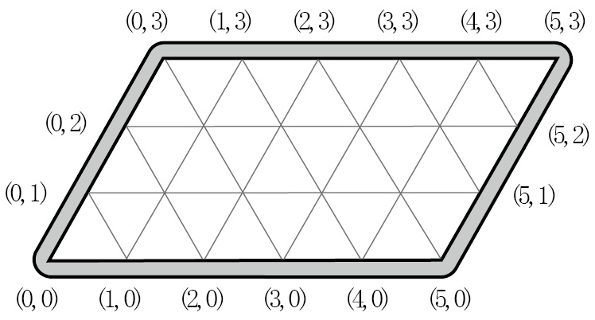
从下图可以看出，把球放在 (5,0) 的位置上，然后沿三角形边线方向撞击台球，台球就会在 (2,3)、(2,0)、(0,2)、(5,2) 和 (4,3)等位置连续反弹。（假设从数学上讲，台球桌没有摩擦力，台球反弹的实际线路与我们预想的线路完全一致。）
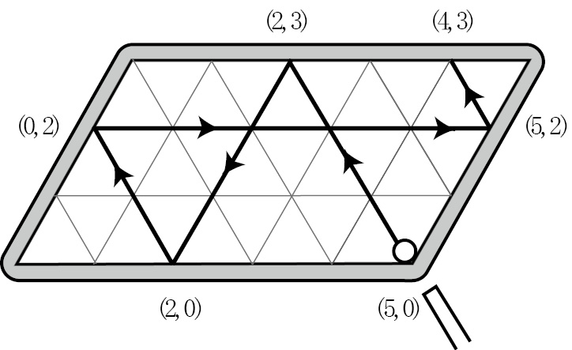
现在，我们假设开球位置是 (0,3)，台球就会依次经过(3,0)、(3,3)、(5,1)、(0,1)、(1,0)、(1,3)、(4,0)等位置。
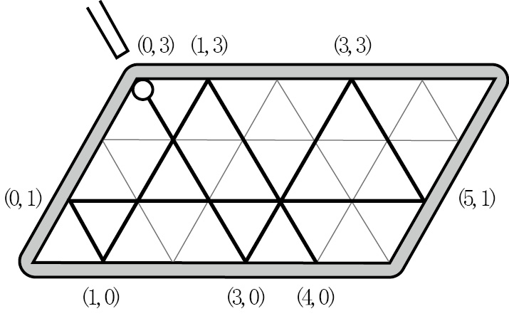
请大家认真观察这些坐标：
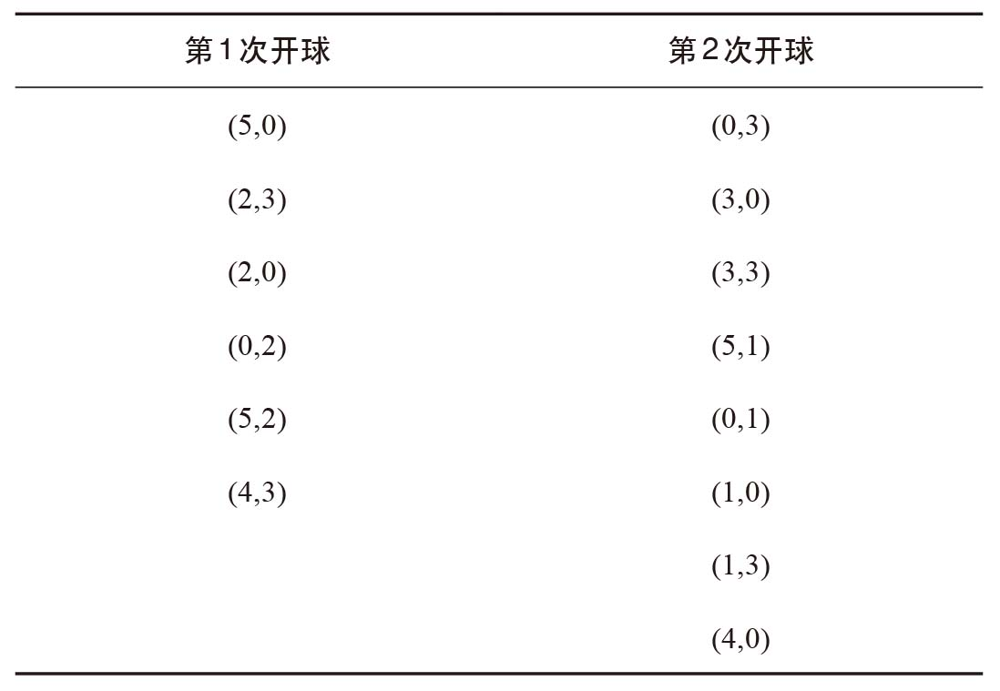
这些数字看上去是不是有点儿眼熟？我希望你也有这样的感觉！因为它们就是三个酒坛问题的两个答案。
为避免混淆，我们把5升酒坛称为酒坛A，把3升酒坛称为酒坛B。
刚开始时，A与B都是空的。
先把A装满，此时这两个酒坛的状态是A = 5升、B = 0升，记作(5,0)。
现在，把A中的酒倒入B中。B装满后有3升酒，A还剩下2升酒。A、B两个酒坛当前的状态是(2,3)。
将B中的酒全部倒入第三个酒坛。现在，A、B两个酒坛的状态是(2,0)。
将A中剩下的酒倒入B中，A、B两个酒坛的状态为(0,2)。
将A再次装满，A、B两个酒坛的状态为(5,2)。
将A中的酒倒入B，A、B两个酒坛的状态为(4,3)。
A中现在装有4升酒，问题解决了。
A与B中酒的数量变化正好对应从(5,0)处开球后各个反弹点的坐标。
所以，如果我们在解题时先把B装满，A与B中酒的数量就正好对应从(0,3)处开球后各个反弹点的坐标。
这个借助球在台球桌上的反弹路线解决三个酒坛问题的巧妙方法，是英国统计学家特威迪（M. C. K. Tweedie）于1939年发明的，当时他才20岁。球每次在偏菱形球桌上反弹之后都会改变前进的方向，同时会告诉我们下一个解题步骤。
下次再遇到同类问题，比如一个特定容积的容器里装满液体，此外还有两个小一些、容积分别为X和Y且没有刻度的空容器，那么，你只需制造一个边长分别为X和Y的偏菱形台球桌，再准备几个台球，就可以解决问题了。威利斯和杰克逊，如果你们也在看这本书，赶紧做好笔记吧。
两个水桶
你站在小河边，手上分别有一个7加仑[3]和一个5加仑的水桶。如何用最少的装水次数，在桶中装入6加仑的水？
在利用几个容器来回装液体这个办法之后，人们还想出了一些其他有趣的问题。
加奶咖啡问题
瓶中装有纯咖啡，碗中装有牛奶。你在牛奶中倒入一些咖啡，再将混有咖啡的牛奶倒回瓶子里，使瓶子和碗中的液体恢复到之前的量。此时，是碗中的咖啡多，还是瓶中的牛奶多？
上面这道题是为早餐准备的，下面这道题则是为午餐或晚餐准备的。
水和酒
你有两个坛子，分别装有1品脱[4]酒和1品脱水。将半品脱水倒进酒中，搅拌。现在，装酒的坛子里有1.5品脱的酒水混合物。将半品脱酒水混合物倒进装水的坛子里，使两个坛子各装有1品脱的液体，再搅拌。以每次半品脱的量，继续在两个坛子间来回倒酒水混合物。多少次之后，两个坛子中酒的比例正好相等？
在两个容器间来回倒的不一定都是液体，有时是沙子。下面这道问题中使用的量度不是体积，而是时间。
精彩一刻钟
给你一个7分钟的沙漏和一个11分钟的沙漏，如何测量一刻钟的时长。
我来告诉你应该从何处入手解决这道题。我们有两个沙漏，所以一开始的时候必须把它们同时颠倒过来。如果只颠倒其中一个，就只能测量出7分钟或者11分钟，这样一来，我们又回到了问题的起点。
请大家认真研究题目给出的数字，因为解题离不开这些数字。两个沙漏分别可以测量7分钟和11分钟，而题目要求测量15分钟。7与11的差是4，11与15的差也正好是4，因此我们可以采取下面这个方法。
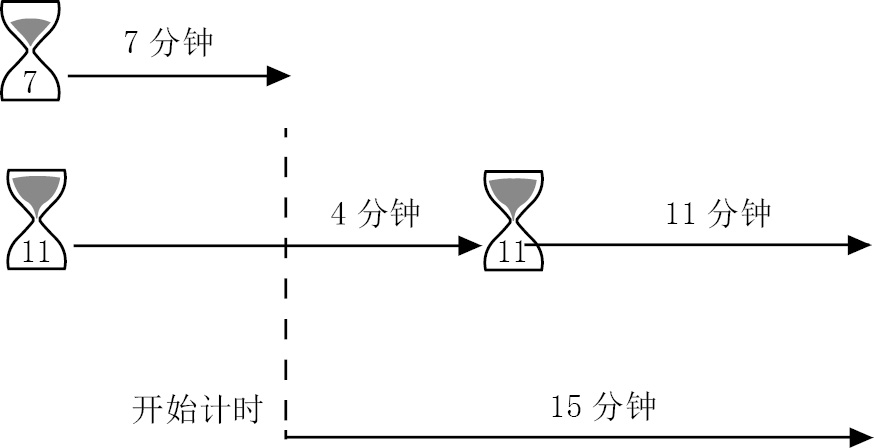
先把两个沙漏同时颠倒过来。7分钟之后，那个7分钟沙漏里的沙流完了，而11分钟沙漏里的沙还可以流4分钟，这个时间差正是我们需要的。因此，15分钟的计时可以从这个时候开始。如上图所示，4分钟之后，11分钟沙漏里的沙也流完了。我们迅速将它颠倒过来，等沙子流完后，就正好完成了总共15分钟的计时。
但是，这个方法不是最佳答案，因为一共用时22分钟才完成了一刻钟的计时。大家可以找出一个更好的方法。
令人头晕眼花的引信
你有一些1小时燃尽的引信。但是，这些细长的引信并不均匀，燃烧速度时快时慢。如果你将它剪成两半，每半根引信燃烧的时间不一定是半小时。
（1）利用两根这样的引信，测量出45分钟的时长。
（2）利用1根引信，尽可能准确地测量出20分钟的时长。
这些燃烧不均匀的引信告诉我们一个事实：借助敏锐的数学头脑，我们可以消除燃烧不均匀的影响，完成准确计时。就这样，数学完胜物理，也赢得了我的喜爱。
下面这道题将教会我们如何克服材料的缺陷。
偏倚的硬币
抛掷一枚质地均匀的硬币，得到正面或反面的可能性是各一半。假设你有一枚质地不均匀的硬币，抛掷这枚硬币，你得到正面或反面的可能性是一个确定值，但它不是各一半。那么，如何利用这枚偏倚的硬币，得到与公平硬币同样公正的结果呢？你需要通过某种抛掷组合，才可以得出各一半的公平结果。
硬币是趣味问题经常使用的一个重要道具，我们将在下一章详细讨论硬币的应用。
18世纪之前，弹簧单盘秤还没有出现，天平是人类仅有的称重工具。正因为如此，从文艺复兴开始，人们利用天平设计出大量的数学难题，到启蒙运动时期仍然盛行。
接下来，我给大家演奏一首锅碗瓢盆协奏曲吧。
分面粉
你有一架天平，以及两个质量分别是10克和40克的砝码。如何通过三次称重，将1千克的面粉分成200克和800克的两份？
假设我们有一套砝码，规格是以下6个数字（单位为千克），其中每一个都是前一个的两倍：
1，2，4，8，16，32
利用这些砝码，可以称出1~36千克的所有整千克数。例如：
3 = 2 + 1（即2千克砝码加1千克砝码等于3千克砝码）
13 = 8 + 4 + 1
27 = 16 + 8 + 2 + 1
63 = 32 + 16 + 8 + 4 + 2 + 1
事实上，这6种规格的砝码组合，是可以称出1~36千克范围内所有整千克数的最小砝码组合。
只要把这些砝码规格写成二进制表达式，就可以明白其中的道理。二进制是仅包含1和0两个数字的计数系统。二进制使用的数字就是十进制使用的只含有1和0这两个数字的数，比如1、10、11、100、110等。二进制中的1、10、100、1 000、10 000和100 000分别对应十进制中的1、2、4、8、16和32。因此，有了二进制数字，我们就知道如何利用上述两倍递增数列表示各个数字了。
3换算成二进制就是11。
13换算成二进制就是1 101。
27换算成二进制就是11 011。
63换算成二进制就是111 111。
最后一位上的1表示1，倒数第二位上的1表示2，倒数第三位上的1表示4，以此类推。同理，最后一位上的0表示没有1，倒数第二位上的0表示没有2，倒数第三位上的0表示没有4，以此类推。比如，13换算成二进制就是1 101，从右至左表示1个1、0个2、1个4和1个8。换言之，13 = 8 + 4 + 1，与上文的表达式相同。
二进制数字非常有趣，但这里不再赘述。我们回过头接着讨论天平与砝码的问题。
既然砝码组合{1，2，4，8，16，32}可以表示出1~63千克的所有整千克数，那么我们在天平的一个托盘上放置这些砝码的某种组合，就可以称出1~63千克的所有整千克数。
如果天平的两个托盘都可以放砝码呢？
巴歇砝码问题
如果天平的两个托盘都可以放砝码，要用天平称出1~40千克范围内的所有整千克数的质量，需要的最小砝码组合是什么？
这个问题出现在比萨的列奥纳多于1202年出版的《计算之书》中，但它更常见的名字叫巴歇砝码问题，以法国人克劳德–加斯帕·巴歇（Claude-Gaspard Bachet）的名字命名（这与他喜欢在豆焖肉里加薯条的习惯无关[5]）。
巴歇是趣题集的发明人。1612年，这位诗人、翻译家兼数学家将他收集的诸多问题整理成册，书名为《趣味数字问题》（Problèmes Plaisants et Délectables Qui Se Font Par Les Nombres）。我们在前面讨论过的很多问题，例如小船过河问题、百禽问题、三个坛子问题等，都被他收入到这本书中。300年里，这本书一直是趣味数学方面的“宝典”，这一领域后来的所有出版物都受到它的影响。不仅如此，这本书还把对天平问题最有名的分析也包括其中。
巴歇对数学史的另外一个重要贡献是，将丢番图（Diophantus）的《算术》（Arithmetica）由希腊语翻译成拉丁语。法国数学家皮埃尔·德·费马（Pierre de Fermat）在阅读《算术》时，在某一页的页边空白处写了一句话，即他在阅读这本书时突发灵感，想到了一条定理的一个巧妙证法，但由于页边空白太小，他未能把证法写下来。这条定理就是费马大定理：当整数n >2时，关于a、b、c的方程 an + bn = cn 没有正整数解。在350多年的时间里，这条定理一直是数学上最著名的未解之谜，无数数学家前赴后继，试图完成对它的证明。当时，费马阅读的《算术》正是巴歇翻译的拉丁语版本。
在解决新的问题之前，我们先热热身：
你有8枚一模一样的真硬币和一枚假硬币。假硬币的外表没有任何瑕疵，但质量略小于其他8枚硬币。只称重两次，如何找出这枚假硬币？
如果你想自己动手解这道题，就不要急着往下看。由于这道题有助于我们做后面的题，所以我先把它的解法告诉你。
解法是：将所有硬币分成3组，每组3枚。我们用1、2、3、4、5、6、7、8、9这9个数字为这9枚硬币编号。我们先比较1、2、3与4、5、6这两组。此时，天平要么保持平衡，要么不平衡。
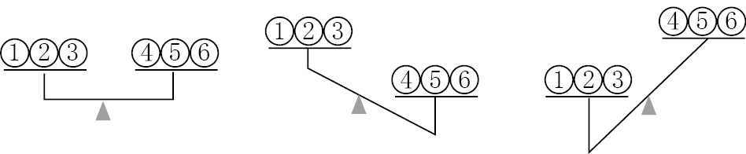
如果天平保持平衡（如左图所示），就说明质量较轻的那枚硬币在7、8、9这一组中；如果天平倾斜的状况如中间图所示，就说明质量较轻的硬币在1、2、3这一组中；如果天平倾斜的状况如右图所示，就说明质量较轻的硬币在4、5、6这一组中。换言之，在这三种情况下，我们都可以减少可选方案的数量，由九选一变成三选一。
在第二次称重时，我们从一组3枚硬币中取两枚，分别放到天平的两端。如果两个托盘一高一低，高的那个托盘里装的就是质量较轻的那枚假硬币；如果天平平衡，就说明第三枚硬币质量较轻。问题解决了！
下面这道题在“二战”期间疯狂流传，让同盟国的人绞尽脑汁。于是有人建议，将题目中说的那枚假硬币扔到对面去，让德国人也伤伤脑筋。
一枚假硬币
你有11枚一模一样的真硬币和一枚假硬币。假硬币的外表没有任何瑕疵，但是与真硬币的质量不同。你不知道假硬币比其他硬币重还是轻。只称重三次，你可以找出这枚假硬币，并确定它比其他硬币重还是轻吗？
单盘秤与我们现在使用的数字秤一样，只有一个托盘，称重时可以读出物体的千克数。人们利用单盘秤，同样设计出了一些非常巧妙的假硬币问题。
一摞假硬币
你有10摞1英镑的硬币，其中9摞都是真硬币，只有一摞全部是假硬币。你知道1英镑真硬币的重量，还知道每枚假硬币比真硬币重1克。用可以称出物体重量的单盘秤，最少称重几次，可以找出那摞假硬币？
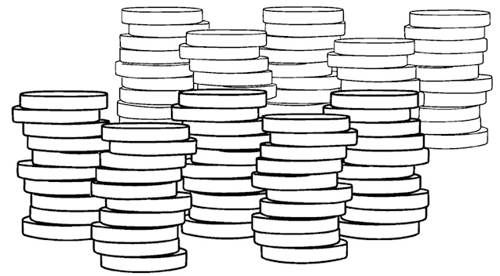
继克劳德–加斯帕·巴歇之后，爱德华·卢卡斯（Édouard Lucas）于19世纪末出版了大量著作，确立了其法国趣味数学领域领军人物的地位。卢卡斯本就是一名杰出的数学家，在素数研究方面做出过重要贡献。在他的著作中，卢卡斯不仅对经典问题进行了分析，还设计出新的趣味数学问题。下面这个有关卢卡斯的故事引自一本1915年的法语数学教材，据说“绝对是真人真事”。作者称，这个故事发生于多年前的一次科学会议上。一天午饭过后，几位著名数学家（其中包括德高望重的泰斗级人物）正在散步，卢卡斯大声说出了下面这个问题，请大家说出正确答案。大多数人沉默以对，只有几个人做出了回答，但他们的答案都是错误的。
亲爱的读者朋友，请你也试一试吧。
从勒阿弗尔到纽约
每天中午，从勒阿弗尔都会发出一班前往纽约的客轮，同时从纽约也会发出一班开往勒阿弗尔的客轮。两个方向的航程都是7天7夜。如果今天从勒阿弗尔出发前往纽约，那么在到达纽约之前，可以遇到多少班从另一个方向开来的客轮？
我非常喜爱这个问题，不仅因为这道题与轮船进出港口这样的日常生活琐事有关，还因为我们需要用一点儿数学知识才能找到答案。说到交通运输，与之相关的高水平问题还真不少，而且大多数是人们在出行时经常考虑的问题。
往返旅程
在无风的天气里，飞机从A地飞到B地，再从B地返回A地，所需的时间正好相等。但是，如果不是无风天气呢？有风时，往返行程的时间是增加、减少，还是相等，或者与风向有关？
我们可以假定在整个往返旅程中风向一直保持恒定。显然，如果从A到B的去程正好顺风，此后风向突然改变，从B到A的返程也是顺风，那么整个旅程的飞行速度肯定比没有风时快。此外，我们还可以假定飞机是沿笔直的航线完成由A到B以及由B到A的旅程的。先考虑飞机去程时顺风（前半程速度更快）、返程时逆风（后半程速度变慢）的情况。风对旅程的影响是否正好相互抵消呢？再考虑风向与航向成一定角度时的情况。
驾车做长途旅行时盯着仪表盘看，也能体会到算术的乐趣。
里程数问题
现代的汽车通常有两个里程表，一个是不可复位的总里程表，显示汽车总的里程数，另一个是短距离里程表，读数可以恢复到0。如果任一里程表所有数位上的读数都是9，那么在变为下一个读数时，这个里程表的所有数位都会变成0。
假设总里程表与短距离里程表的前4位读数相同，如下图所示：
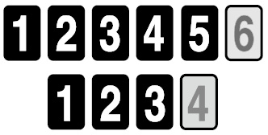
在不复位短距离里程表的前提下，汽车总里程数为多少时，这两个里程表的前4位读数会再次相同？
接下来，我们来看一个与跑步有关的问题。
超越
（1）赛跑时，你超过了第二名，请问你是第几名？
（2）赛跑时，你超过了最后一名，请问你是第几名？
跑步的方式
康斯坦茨和达芙妮正在跑马拉松。竞赛类的马拉松全长是26.2英里。康斯坦茨以每英里8分钟的速度匀速跑完全程，而达芙妮有时快速冲刺，有时又会放慢速度，但跑完每英里所需的时间都是8分1秒。换句话说，每跑完1英里，无论在赛程的第一个1英里、最后一个1英里，还是赛程中间的1英里，康斯坦茨都需要8分钟，而达芙妮每英里的用时都比康斯坦茨多1秒钟。
达芙妮是否有可能赢得马拉松比赛？
我在这里稍做提示。达芙妮是有可能获胜的，但她必须找到正确的方法。在我看来，这个问题不是趣味问题，而应该归入悖论的范畴。有的悖论是逻辑悖论（前提导致自相矛盾的结论），还有的悖论则更加“阴险”——问题的陈述看似荒谬，但是经过认真研究却发现并无问题。下面两个问题就属于后者。
干瘪的土豆
把100千克含水量为99%的土豆放在阳光下暴晒。一天之后，水分蒸发了一些，土豆含水量变成了98%。请问，现在这堆土豆有多重？
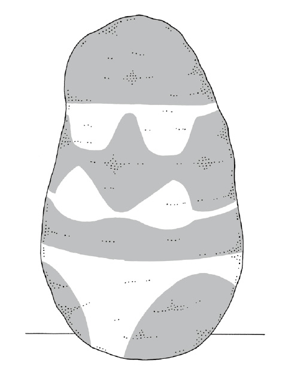
下面这个问题选自罗斯·鲍尔（W. W. Rouse Ball）1896年版的《数学游戏及欣赏》（Mathematical Recreations and Essays）。这本书是第一部重要的英文趣味数学著作，首次出版时间是1892年，随后一共再版13次，最后4版于1939年、1942年、1974年和1987年面世，那时罗斯·鲍尔已经离世了。这4版不仅在原作的基础上做了修改，还由加拿大伟大的几何学家考克斯特（H. H. M. Coxeter）增补了一些内容。罗斯·鲍尔的职业生涯是在剑桥大学度过的，是这所高校里的一名活跃分子。其间，他创建了五芒星俱乐部，这是全世界最古老的魔术社团之一。遵照他的遗嘱，他的遗产被捐献给牛津大学和剑桥大学。后来，这两所大学利用这笔资金，分别设立了罗斯·鲍尔数学教授奖。
涨薪水的方式
你准备接受一份起始年薪为1万英镑的工作，老板让你从下面两种涨薪水的方式中任选一种。
（1）A计划：每6个月涨500英镑（也就是说，任职6个月之后，下6个月的薪水将增长500英镑）。
（2）B计划：每年涨2 000英镑。
你会选择哪种方案？
棘手的问题
迪克有一根木棒，他准备将它砍成两截。如果他随意选择下刀的位置，那么砍成两截之后，短的那一截的平均长度是多少？
夫妻围坐问题是流传最广的爱德华·卢卡斯问题之一。题目要求多对夫妻围桌而坐时，男性与女性必须交替就座，且夫妻两人的座位不得彼此相邻。这道题的难度远远超出了本书的范围。卢卡斯没有把这道题列入他的趣味数学著作中，而是以附录的形式，在一本关于数论的学术著作中提出来了。但是，既然大家感兴趣，我不妨透露一二。如果是两对夫妻，题目的要求将无法满足。如果是三对夫妻，有12种坐法；4对夫妻有96种坐法；5对夫妻有3 120种坐法。
人们受到这个问题的启发，围绕聚会的话题又设计出许多精彩的问题。
握手问题
爱德华和露西邀请4对夫妻参加晚宴。每个人只和自己不认识的人握手。客人到齐后，爱德华问自己的妻子和8位客人分别与多少人握过手，结果这9个人给出的答案各不相同。
那么，露西与多少人握过手？
如果这个场合显得过于正式，那么我们换一个随意一点儿的场合。
握手礼与亲吻礼
爱德华与露西邀请一些朋友参加晚宴。朋友中有的是独自一人，有的是与异性伴侣同来。男性相互打招呼时握手一次，而女性无论是见到女性还是与男性打招呼都会行亲吻礼。（当然，夫妻之间无须行亲吻礼。）出席晚宴的所有人都与爱德华、露西以及其他宾客打过招呼。如果一共行了6次握手礼和12次亲吻礼，那么参加晚宴的总人数是多少？其中独自参加晚宴的有多少人？
这里涉及组合的问题。有时候组合方式数不胜数，因此大家不要白费力气了，还是去剧院放松一下吧。记住，别忘了带上入场券。
对号入座
100个人排队进入剧院。剧院一共有100个座位，但是排在队伍最前面的一个观众找不到自己的票了，于是她随便坐到一个座位上。接下来入场的观众都对号入座，但如果他们的座位已经有人就座，他们就会随便选择一个座位坐下。
最后入场的那名观众就座的座位号与其票上座位号一致的可能性有多大？
本章介绍的问题都与假设的环境有关。接下来，我们考虑一些货真价实的环境。
[1] 第纳里厄斯（denarius）、苏勒德斯（solidus）均为古罗马帝国发行的货币。——译者注
[2] 比萨的列奥纳多即意大利著名数学家斐波那契。——编者注
[3] 1加仑≈3.79升。——编者注
[4] 1品脱≈0.57升。——编者注
[5] 英文表达“weight problem”（砝码问题）还可以被理解成“体重超重问题”。——译者注